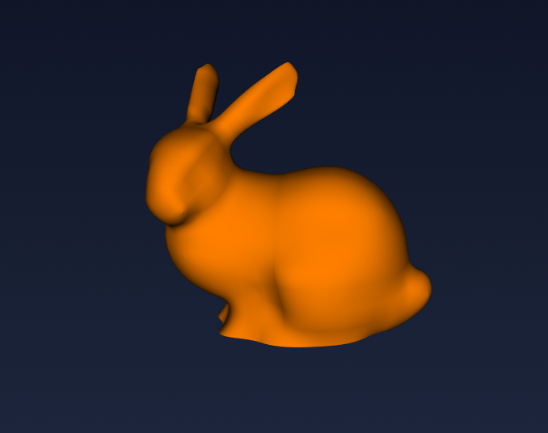
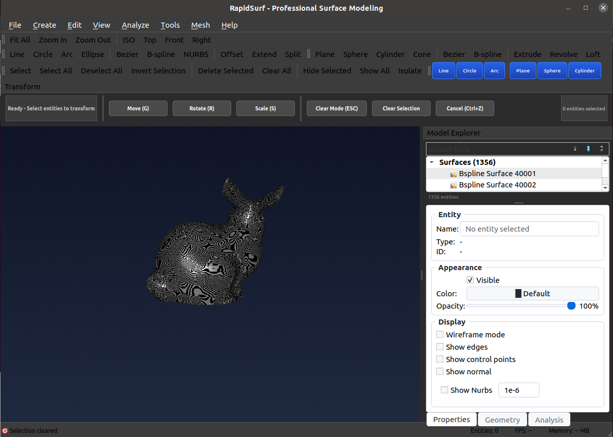
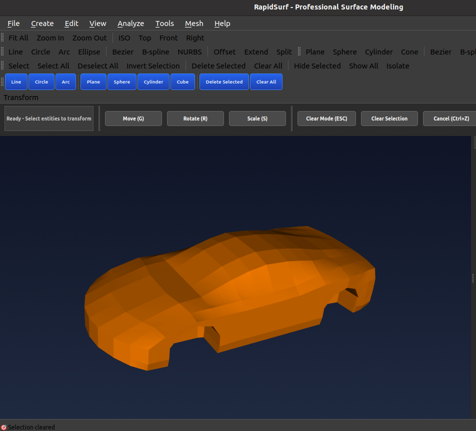
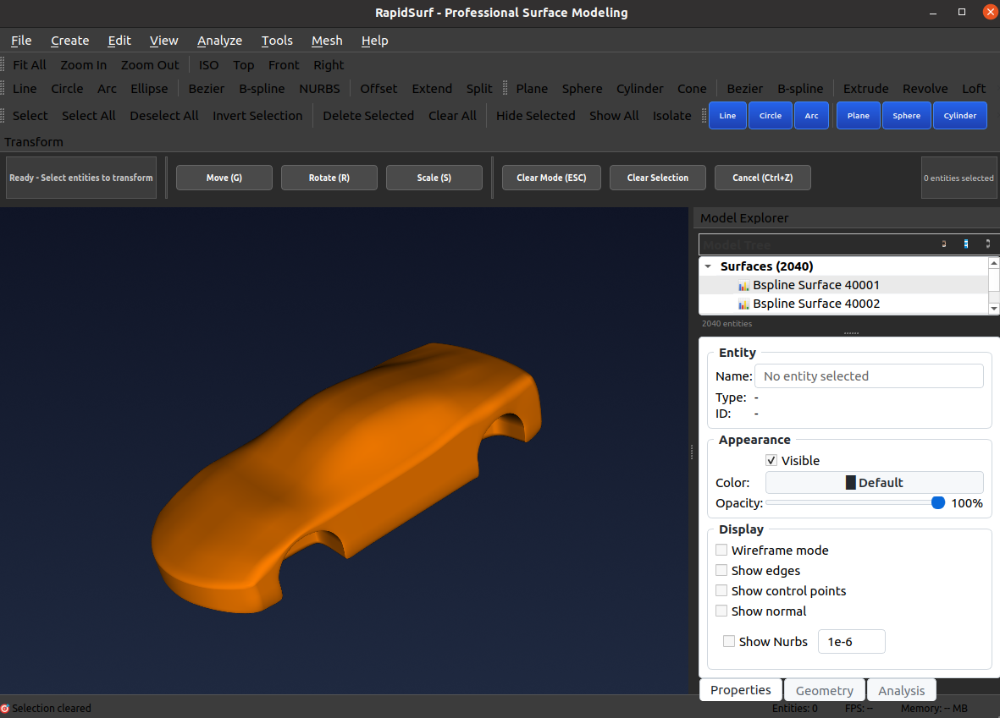
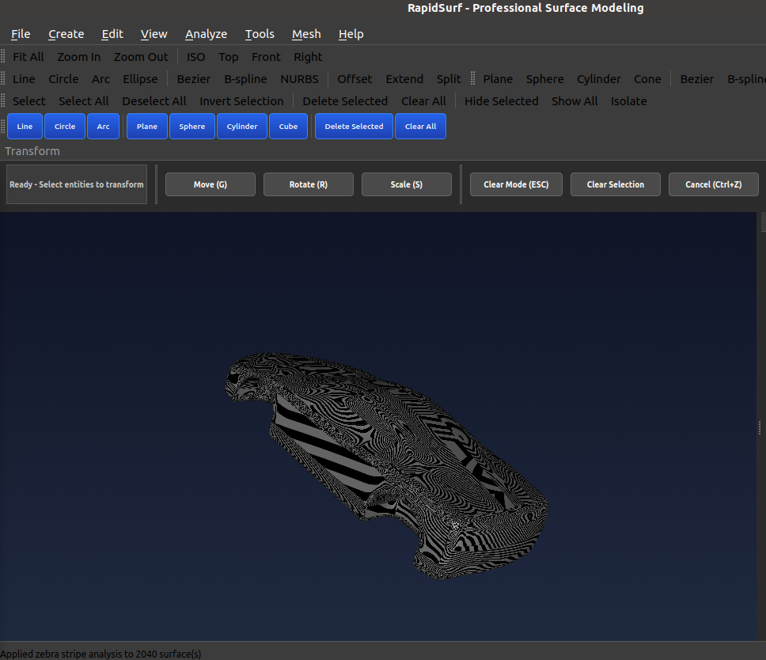
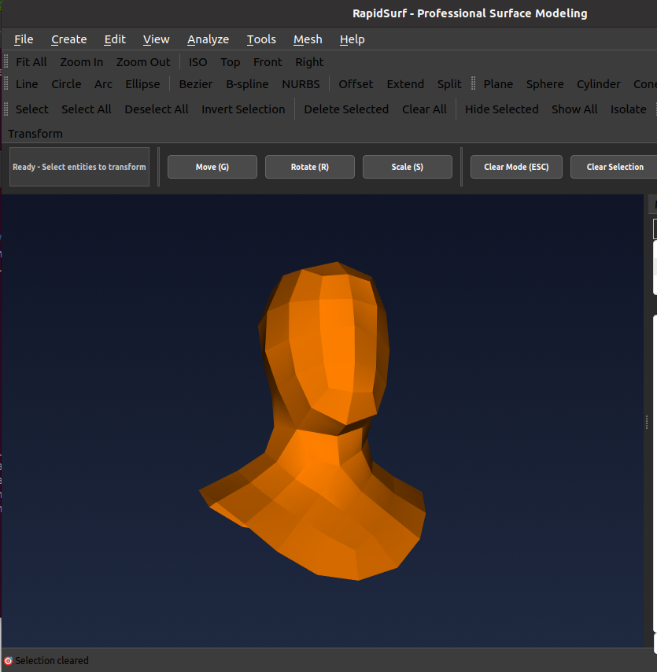
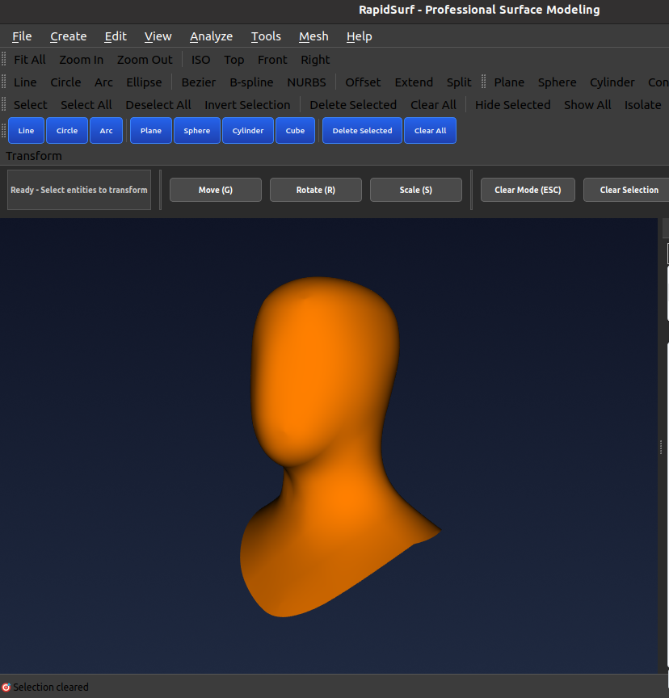

RapidSurf 专业能力
完整 CAD 平台：Class-A 曲面建模 • 逆向工程 • 高级网格，适用于端到端产品开发工作流
网格转曲面
将四边形主导网格模型转换为 G1 连续 B 样条曲面模型。适用于逆向工程、扫描数据处理以及将多边形模型转换为可制造参数化曲面。
四边形主导网格转 G1 B 样条曲面
RapidSurf 自动将四边形主导网格转换为光滑、切向连续的 B 样条曲面片。这一强大逆向工程能力将来自 3D 扫描、网格建模软件或其他来源的多边形模型转换为适用于制造与进一步 CAD 操作的可编辑参数化曲面。
- 自动拓扑分析：智能检测与处理四边形主导网格结构
- G1 连续性：相邻曲面片间切向连续过渡
- 高质量拟合：精确曲面逼近，最小偏差原网格
- 斑马纹分析：内置质量验证，确保光滑公平曲面
真实转换示例
通过这些生产级结果展示网格转曲面能力。每例显示原始网格模型、转换后的 B 样条曲面及斑马纹质量验证。
斯坦福兔子模型
复杂有机形状，光滑曲率过渡，展示卓越曲面质量与曲面片间 G1 连续性。
原始网格模型

B 样条曲面结果
斑马纹分析
光滑斑马纹确认卓越曲面质量与 G1 连续性
汽车部件模型
复杂汽车几何，混合曲率区域，展示算法处理挑战性工业形状的能力。
原始网格模型
B 样条曲面结果
斑马纹分析
面板过渡间连续条纹验证 G1 质量
人头模型
高度细节有机形态，微妙曲面变化，展示精确拟合与光滑连续性保持。
原始网格模型
B 样条曲面结果
斑马纹分析

干净斑马纹确认高质量曲面重建
🔷 网格功能
专业网格创建、操作与转换工具，支持高级曲面建模工作流。导入网格、从曲面创建网格，以及三角形与四边形拓扑之间的转换。
🚀 下一个 Beta 版本： 这些网格功能将在下一个 Beta 测试版本中提供。如需更多信息，请直接联系我们。
🎯 网格创建与导入
导入 OBJ/STL 文件
从行业标准 OBJ 和 STL 文件格式加载三角形和四边形网格进行进一步处理

从曲面生成网格
从 Class-A NURBS 曲面生成高质量网格，具备自适应细分和曲率控制
⚙️ 网格操作与编辑
显示/隐藏顶点
切换顶点可见性，实现更清晰的可视化和更便捷的复杂网格选择
选择与光滑顶点
交互式顶点选择，使用智能光滑实现局部网格细化和质量改进
光滑整个网格
对整个网格应用全局智能光滑，通过迭代控制优化曲面光滑度
🔄 三角形 ↔ 四边形网格转换
智能拓扑转换
使用智能配对算法在三角形和四边形网格拓扑之间转换。四边形网格对于高质量 B 样条曲面转换至关重要。
- ✓ 三角形 → 四边形：使用共面性和纵横比质量指标的贪婪配对
- ✓ 四边形 → 三角形：多种对角线选择策略实现最优三角化
- ✓ 质量控制：用户可调转换质量和单元形状阈值
- ✓ B 样条就绪：四边形主导网格无缝转换为 G1 B 样条曲面
专业网格拓扑优化，适用于逆向工程和曲面重建工作流
曲线创建
基本曲线图元
直线
通过起点/终点或方向向量创建精确直线
圆
中心半径定义或三点构造完整圆
圆弧
中心半径角度或三点方法创建圆弧
椭圆
长短轴控制与旋转椭圆曲线
高级参数曲线

贝塞尔曲线
多项式贝塞尔曲线，交互控制点操作与阶数控制
B 样条曲线
行业标准 B 样条曲线，局部控制、节点向量编辑与阶数指定
NURBS 曲线
非均匀有理 B 样条，权重控制精确表示圆锥曲线与复杂形状
点数据曲线
插值通过点
精确通过指定点集创建光滑曲线，切向连续
拟合点曲线
最佳拟合曲线近似，公差控制适用于噪声或密集点数据
曲线衍生曲线
偏移曲线
指定距离创建平行偏移曲线，拐角处理选项
延伸曲线
线性、圆形或自然延伸方法延伸曲线端点
混合曲线
两现有曲线间创建光滑 G1/G2 连续混合曲线
曲面衍生曲线
等参数曲线
从曲面参数化提取恒定参数（U 或 V）曲线
边界曲线
从曲面修剪环与参数边界提取边缘边界曲线
截面曲线
曲面与切割平面相交创建指定位置截面曲线
相交曲线
计算两曲面相交曲线，自适应镶嵌
曲面创建
基本曲面图元
平面
原点、法向量与尺寸指定平面曲面
球面
中心、半径与参数化控制球面曲面
圆柱面
轴、半径与高度指定圆柱面曲面
圆锥面
顶点、轴、底半径与高度控制圆锥面曲面
点数据曲面
插值通过点
创建精确通过指定 3D 点集的光滑曲面
约束拟合
曲面近似，插值指定点同时拟合其余点云数据
最佳拟合曲面
高级点云曲面，自适应控制点放置与公平优化
单轮廓曲面
拉伸曲面
轮廓曲线沿方向向量线性拉伸，距离控制
旋转曲面
轮廓曲线绕轴旋转生成曲面，轴指定与角度范围
管道曲面
沿脊线曲线扫掠恒定或可变半径管道曲面，截面控制
多曲线网络曲面
放样曲面
多轮廓曲线间光滑混合，切向连续与引导曲线支持
直纹面
用直线连接两边界曲线，创建可展曲面
扫掠曲面
沿一条或多条路径曲线扫掠轮廓曲线，缩放与旋转控制
通过曲线网络
通过相交 U 和 V 曲线网络创建光滑曲面，优化光滑性
高级曲面片

Coons 片
经典 Coons 片，四边界曲线，可选 G1/G2 连续性约束
N 边填充曲面
填充 N 边边界区域，生成光滑高质量曲面，适用于复杂拓扑建模
混合与倒圆
G2 混合曲面
两 NURBS 曲面间曲率连续混合，自动位置、切向和曲率匹配，用户可调切向缩放实现精确控制
滚珠混合
恒定半径倒圆曲面，使用滚珠方法，支持多半径
编辑操作
曲线操作
分割曲线
在参数值或交点处分割曲线为独立段
修剪曲线
使用边界或切割对象修剪曲线，参数范围指定
延伸曲线
使用线性、圆弧或光滑连续方法延伸端点
曲面操作
分割曲面
使用曲线或等参数线分割曲面为多片
修剪曲面
使用边界曲线创建修剪曲面，定义可见/不可见区域
延伸曲面
使用线性、圆形或光滑连续方法延伸曲面边缘
交互编辑与变换
控制点编辑与局部变换
通过直接操作全面修改曲线与曲面。控制点编辑：左键选择控制点，右键拖动在 3D 空间移动，实现直观形状精修。局部变换：对选定曲线与曲面执行精确移动、旋转与缩放，使用交互局部坐标系，轴约束变换实现准确几何定位与修改。
质量分析
曲率分析
曲率梳
可视曲率分析，梳状显示曲率大小与分布
曲面质量
斑马纹分析
基于反射曲面质量分析，可调条纹图案与照明
技术卓越
精度与质量
- 行业标准 NURBS 数学
- 基于公差几何操作
- G0、G1、G2 连续性控制
- 数值稳定性优化
性能与效率
- C++ 计算内核，Eigen 优化
- 实时 3D 可视化
- 交互参数调整
- 内存高效算法
专业工作流
- 全面编辑工具
- 所有重建操作保留原版选项
- 参数约束处理
- 质量分析与验证